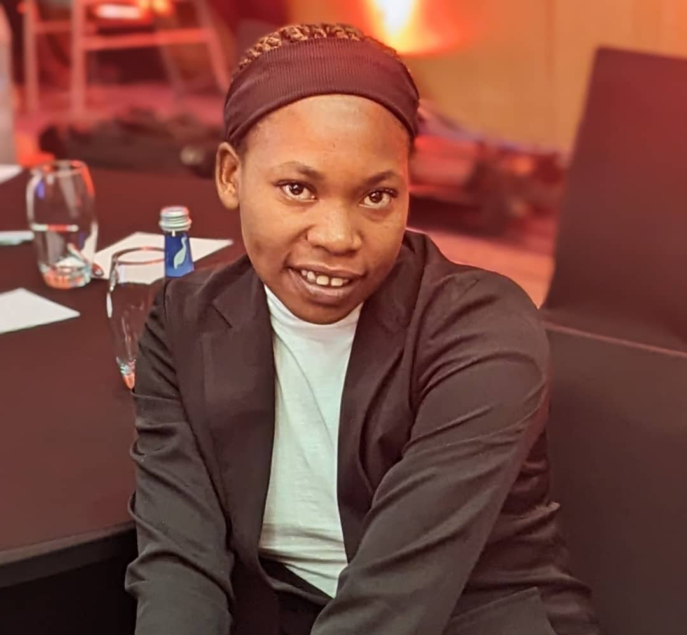

Aspiring Software Engineer passionate about building scalable web applications

I am a Software Engineering student at African Leadership University passionate about building modern web applications and using technology to solve real-world problems. I enjoy working on both backend systems and front-end development, creating responsive and user-friendly interfaces. My goal is to use technology to improve access to education and opportunities in underserved communities.
Download My CV
BSc Software Engineering
African Leadership University
Graduation: July 2028
Email: moniqueniyobyose15@gmail.com
Location: Kigali, Rwanda
Download CV